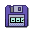
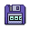
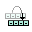

Editing the Tape
The tape is displayed in the bottom portion of the window. The darkened cell represents the
location of the read/write head, and the '*' symbol indicates that the first cell of the tape is the
cell immediately to the right. The tape extends infinitely in the rightwards direction (at least,
as far as the memory limitations of the system will allow).
This guide describes how to manually write data to the tape for processing by a machine.
In this program, there is only one tape, and the tape is shared with all machines that are currently
open. There is only ever one read/write head on this tape, and the read/write head is shared
between all machines. However, the user can manually position the read/write head and edit the
tape.
Moving the Read/Write Head
To manually move the read/write head left or right, either use the left and right arrow keys on the
keyboard, or the arrow buttons on either side of the tape to move the head one cell at a time. To
move the read/write head back to the leftmost cell of the tape, select
Tape > Reset Read/Write Head, or use the button next to the tape.
Writing Symbols to the Tape
The read/write head acts as a cursor for you to modify the tape with. Simply type the character on
your keyboard to have the corresponding symbol appear on the tape in the location of the read/write
head. To type a blank character, press spacebar or '_'. The backspace key will replace the
character under the read/write head with a blank character, and move left by one.
Creating a Tape  


By default, Tuatara begins with a blank tape. If at any point you would like to create a new, empty
tape, select File > New Tape. Existing tapes may be saved or loaded from disk by selecting
File > Save Tape and File > Open Tape respectively.
Reloading the Tape 
Often when you are debugging a machine, you may wish to repeatedly apply the same input to the
machine. It is tedious to re-enter the tape input data manually, or repeatedly have to select the
same file to load. Hence, an option is provided to reload the tape to the state it was in when it
was last saved. To reload the tape, select Tape > Reload Tape. If the current tape has not
been saved, using this option is equivalent to erasing the tape.
Erasing the Tape 
To clear the tape contents, select Tape > New Tape. Selecting File > New Tape also
has the effect of erasing the tape.